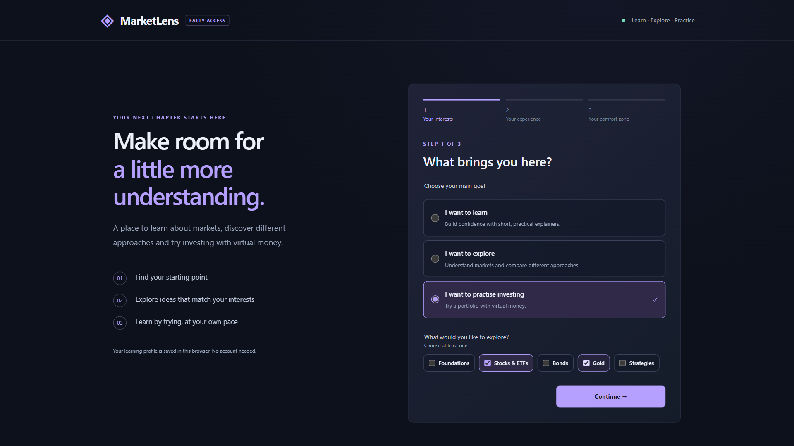
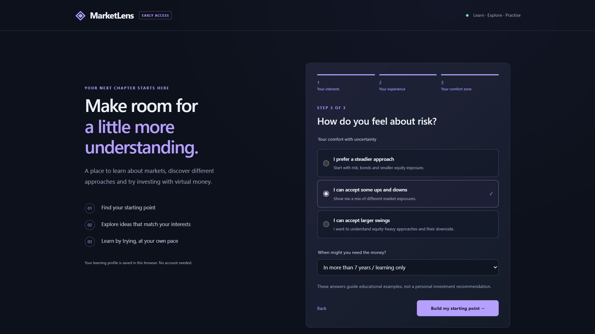
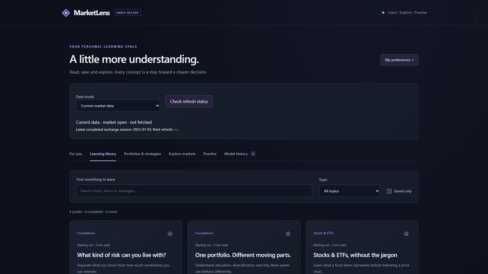
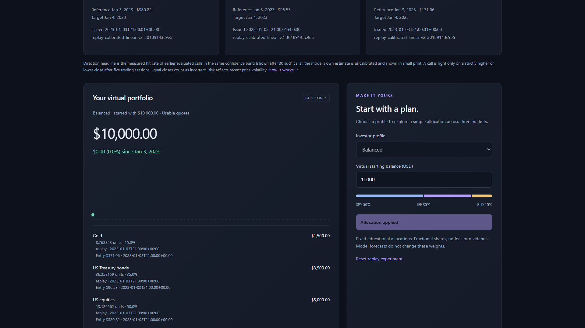
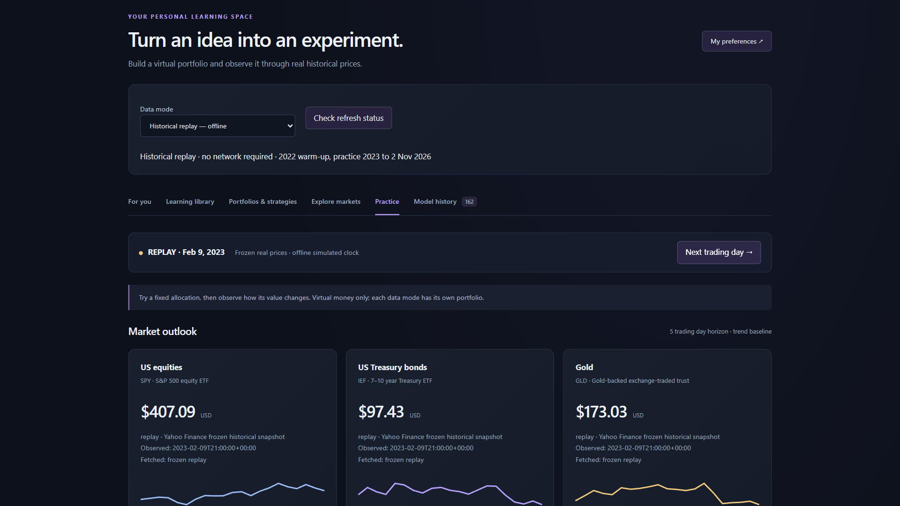
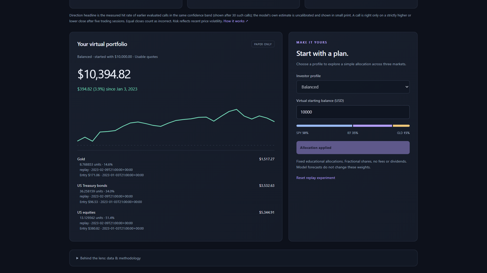

MarketLens
Learn to invest
with virtual money.
with virtual money.

Get it free from the web page · Windows
1Copy
2Paste into PowerShell
3Open 127.0.0.1:8080

1Say what you want to do
For example: practise investing, in stocks and gold

2How much up and down is OK?
It builds your starting point from your answers

3Read short guides
Risk, portfolios, stocks and ETFs, without the jargon

4Invest $10,000 of virtual money
Pick a plan: Conservative, Balanced or Growth

5Step through real trading days
Real 2023 prices, one day at a time

See what happened to your money. No real risk.
esst-prog2.github.io/MarketLens